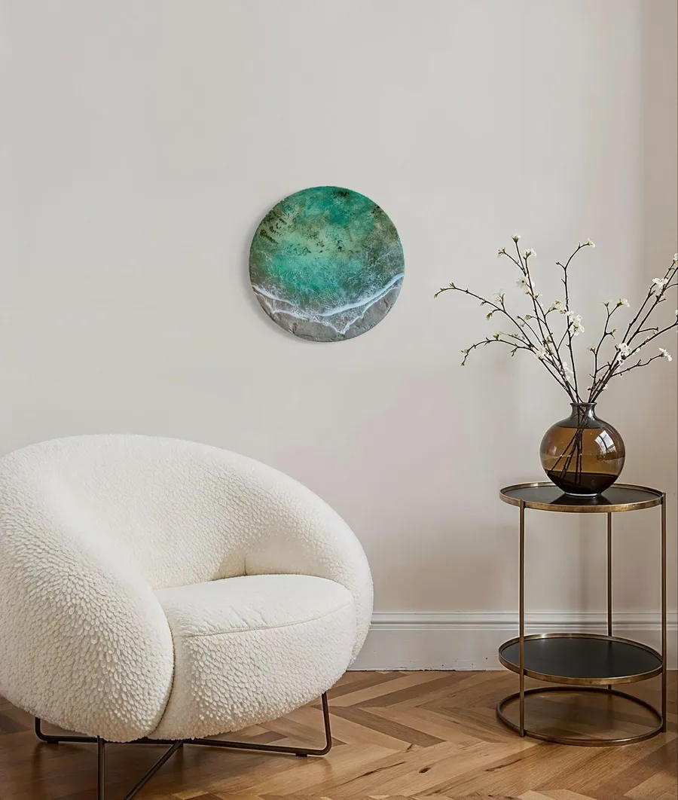

海のレジンアート販売｜沖縄のアトリエ
まるで、そこに海があるように。
沖縄のレジンアートなら、Mura Living。壁にも、テーブルにも。
家具職人歴17年以上の手で、美しい海や
砂浜、サンゴ礁を立体で表現しています。
見る人に、いやしと感動的な非日常空間を。

沖縄の海は、ひとつの青ではありません。
白い砂の上で透きとおり、珊瑚の影で翠に沈み、
沖へ向かうほど、深い藍へと変わっていきます。
Mura Livingは、その色と地形をレジンで立体に起こす、
沖縄県豊見城市の小さなアトリエです。
砂浜の凹凸を下地から作り、何色もの青を重ねて、
削り、こすり、また重ねる。
オーダー家具の職人として木に向き合ってきた手で、
部屋に入った瞬間に目を奪われる海を作っています。
海のアトリエABOUT



海の風景GALLERY
二つとして同じ海はありません。
気になる作品は、オンラインショップ（STORES）でご覧いただけます。
作品WORKS

壁掛けアート（四角）
- 20×20cm
- ¥25,000
- 30×42cm
- ¥70,000
- 42×60cm
- ¥100,000
- 30×90cm
- ¥150,000
- 40×120cm
- ¥200,000
- 60×100cm
- ¥280,000
壁掛けアート（丸）
- 直径40cm
- ¥70,000
- 直径60cm
- ¥100,000
丸テーブル
- 直径30cm×高さ14cm
- ¥100,000
- 直径45cm×高さ58cm
- ¥180,000
- 直径60cm×高さ72cm
- ¥230,000
価格はすべて税別の目安です。一点ものの作品の価格は、オンラインショップでご確認ください。
お部屋に合わせたオーダー制作も承ります。打ち合わせから完成までの目安は1〜2週間です。
価格の目安PRICE

海のテーブルTABLE

REMAKE思い出の天板を、海に。
使い込んだテーブルも、
天板を作り替えれば、毎日の主役になります。
沖縄県内はお引き取り、
県外の方は送っていただく形でご相談ください。
事例：直径90cm ¥300,000（税別・デザイン設計、制作、設置）
リメイクについて

凹凸を作る
砂浜や海底の起伏を、
下地から形にします。
青を重ねる
何色もの青を重ね、
水の深さを出します。
削り、磨く
削ってはこすり、
波の表情を整えます。
立体の理由TECHNIQUE
ホテルのロビー、クリニックの待合室、事務所の応接。
場所と光に合わせて、サイズと色をご提案します。
- ホテル・ヴィラ・民泊
 クリニック・事務所
クリニック・事務所- ダイビングショップ・店舗
- 別荘・クルーザー
法人・設計者の方へ
導入先の例：歯科クリニックの待合室、事務所、工務店の打ち合わせテーブル、海外の投資用民泊物件、ヴィラ
空間に置く海FOR BUSINESS

オンラインショップで買う
販売中の作品は、STORESで
そのままご購入いただけます。アトリエで実物を見て買う
豊見城市のアトリエで、
質感を確かめて選べます。相談してオーダーする
お部屋の写真を見ながら、
サイズと色を一緒に決めます。
写真では伝わらない凹凸と光の揺らぎを、
実物でご覧ください。
遠方の方はZoomでも作品をお見せします。
Mura Living
沖縄県豊見城市（番地はご予約の方にお伝えします）
ご見学はご予約制です
アトリエ見学ATELIER
Mura Livingの基本情報
- 屋号
- Mura Living（ムラリビング）
- 作家
- 村山尚士
- 所在地
- 沖縄県豊見城市（番地はご予約の方にお伝えします）
- つくっているもの
- 海のレジンアート（壁掛け）、レジンテーブル、天板リメイク
- 価格
- ¥25,000〜¥300,000（税別）
- ご購入
- オンラインショップ（STORES）、アトリエ、オーダー
- ご見学
- ご予約制／Zoom相談も可
- メール
- muraliving12@gmail.com